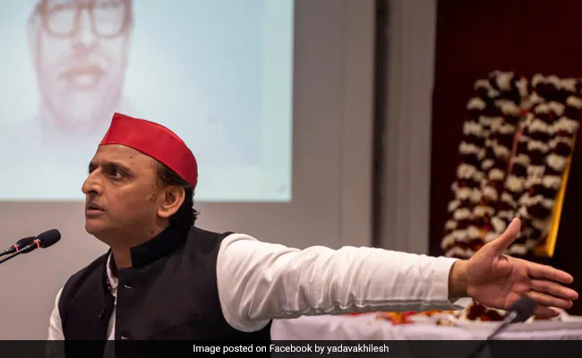

Taza Khabar
Welcome to our page
Delimitation Commission Gets 1 Year Extension To Conclude Its Task In J&K
A gazette notification issued by the government on Wednesday night said the panel, headed by retired Supreme Court judge Ranjana Prakash Desai, will get one more year for completing its task in the Union Territory.
New Delhi: The Delimitation Commission, a panel for redrawing the parliamentary and Assembly constituencies in Jammu and Kashmir, has got a one-year extension, a move indicating that the Assembly polls in the Union Territory would not be held anytime soon.
Microsoft Group Transcribe Is a New Garage App That Offers Real-Time Translation for Multiple Users' Chats
Microsoft Group Transcribe app has been launched by Garage, the experimental department of the software giant. Launched on the iOS platform initially, the app lets multiple users chat together where all their conversations will be transcribed in real time. Microsoft Garage is a platform of employees, customers, and partners to work after-hours and utilise the resources for experimenting new ideas. Some of the popular experiments to emerge from Garage have been SMS Organiser, Xbox's Adaptive Controller, Seeing AI, Microsoft Kaizala, and Microsoft Launcher for Android, among many others.
Samajwadi Party Will Win UP Polls, Work Towards Scrapping EVMs: Akhilesh Yadav

Lucknow: The Samajwadi Party (SP) will win the Uttar Pradesh Assembly elections by a huge majority and then ''samajwadi people'' will work towards abolishing the electronic voting system, party president Akhilesh Yadav claimed on Thursday
"On EVMs (Electronic Voting Machines), I still say that no one trusts them. Recently in the USA, the polls were conducted on ballot papers, and counting took several days. People trust only ballot papers, but this fight cannot be fought right now," the SP chief said in Jhansi when asked about his views on EVMs.